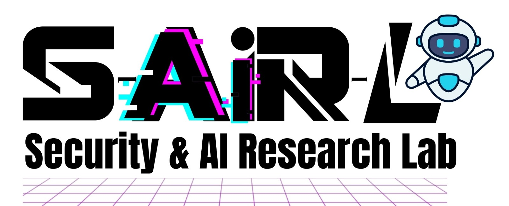

Mst Shapna Akter 
Teaching
Area
- Course : CIS 4180 / 5180 Natural Language Processing
Hi, I'm Shapna, an Assistant Professor at Oakland University, specializing in Natural Language Processing (NLP)-a dynamic field that merges computer science, linguistics, and artificial intelligence. My passion lies in guiding students through the complexities of NLP, helping them develop both a solid theoretical foundation and the practical skills crucial for success in this rapidly evolving domain. In my NLP course, I emphasize the connection between theory and application. Students will delve into the latest techniques in language models, text analysis, and machine learning, with hands-on projects designed to simulate real-world challenges. My goal is to equip you with the tools and knowledge to tackle complex problems in natural language understanding, generation, and more. I am strongly committed to mentorship and strive to create a collaborative and inclusive classroom environment where every student feels supported and encouraged to explore their interests. I encourage active participation and critical thinking, fostering a space where ideas can be freely exchanged and innovation can flourish. Beyond the classroom, I engage in ongoing research within the NLP domain, contributing to advancements in the field and ensuring that the course content reflects the latest trends and discoveries. I look forward to working with you on this exciting journey through the world of Natural Language Processing, and I am here